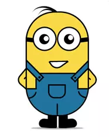

<!DOCTYPE html>
<html lang="en">
<head>
    <meta charset="UTF-8">
    <title>小黄人</title>
    <style>
        *{margin:0;padding:0;position: relative;}
        html{
            min-height:100%;
            /*background: url(./img/load.jpg) no-repeat center center;*/
            /*background-size:1500px 750px;*/
        }
        body{
            position: relative;
            display: flex;
            min-height:100vh;
            justify-content: center;
            align-items: center;
        }
        .wrapper{
            width:2rem;
            min-height:2rem;
        }
        .xhr{
            width:1.2rem;
            margin:auto;
        }
        .shenti{
            width:1.2rem;
            height:2rem;
            border-radius: .6rem;
            background: #F9D846;
            border:2px solid #424242;
            overflow: hidden;
            z-index:3;
        }
        /*裤子*/
        @media (min-width:10px){

            .kuzi{
                position: absolute;
                width:1.2rem;
                height:.55rem;
                bottom:0;
                background: #21759F;
                border-top:2px solid #424242;
            }
            .kzout{
                position: absolute;
                width:.8rem;
                height:.25rem;
                top:-0.25rem;
                left:.18rem;
                background: #21759f;
                border:2px solid #424242;
                border-bottom: none;
            }
            .koudai{
                position: absolute;
                width: .25rem;
                height: .2rem;
                border-bottom-left-radius: 0.1rem;
                border-bottom-right-radius: 0.1rem;
                border:2px solid #424242;
                top:.25rem;
                bottom:0;
                left:-1px;
                right:0;
                margin:auto;
            }
            .kufeng{
                position: absolute;
                width:0.02rem;
                height:0.2rem;
                background: #424242;
                left:0;
                right:0;
                bottom:0;
                margin:auto;
            }
            .lskoudai{
                width:.22rem;
                height:.15rem;
                top:0.05rem;
                overflow: hidden;
                /*background: rgba(255,0,0,0.5);*/
            }
            .lkoudai{
                position: absolute;
                width: .5rem;
                height:.3rem;
                bottom:0;
                right:0;
                border-radius:50%;
                border-right:2px solid #424242;
                border-bottom:2px solid #424242;
            }
            .rskoudai{
                position: absolute;
                width:.22rem;
                height:.15rem;
                top:.05rem;
                right:.02rem;
                overflow: hidden;
                /*background: rgba(255,0,0,0.5);*/
            }
            .rkoudai{
                position: absolute;
                width: .5rem;
                height:0.3rem;
                bottom:0;
                left:0;
                border-radius:50%;
                border-left:2px solid #424242;
                border-bottom:2px solid #424242;
            }
            .jiandai{
                width:.50rem;
                height:.08rem;
                background: #21759f;
                border:2px solid #424242;
            }
            .ljiandai{
                top:-0.12rem;
                left:-0.35rem;
                transform: rotate(45deg);
            }
            .ljiandai:after{
                position: absolute;
                content: '';
                width:0.05rem;
                height:0.05rem;
                border-radius:50%;
                top:0;bottom:0;
                right:2px;
                margin:auto;
                background: #282828;
            }
            .rjiandai{
                top:-0.24rem;
                right:-0.61rem;
                transform: rotate(-45deg);
            }
            .rjiandai:after{
                position: absolute;
                content: '';
                width:.05rem;
                height:.05rem;
                border-radius:50%;
                top:0;bottom:0;
                left:2px;
                margin:auto;
                background: #282828;
            }
        }
        /*眼睛*/
        @media (min-width:10px){
            .yanjing{
                position: absolute;
                width: .36rem;
                height: .36rem;
                top: .30rem;
                border-radius: 50%;
                border:2px solid #282828;
                background: #ffffff;
                overflow: hidden;
                animation: yj 5s infinite;
            }
            @keyframes yj {
                90%{height:.36rem;top:.30rem}
                91%{height:0.02rem;top:.48rem}
                98%{height:0.36rem;top:0.30rem}
            }
            .yanzhu{
                position: absolute;
                width:.17rem;
                height:.17rem;
                top:20%;
                left:20%;
                border-radius:50%;
                border:1px solid #424242;
                background: #282828;

            }
            .yanquan{
                position: absolute;
                top:1px;
                left:1px;
                width:.10rem;
                height: .10rem;
                border-radius:.05rem;
                background: #ffffff;
            }
            .zyanjing{
                left:.2rem;
            }
            .zhyanzhu{ animation:zyz 5s linear infinite}
            .zbyanquan{  }
            @keyframes zyz {
                10%{left:0;right:auto;}
                20%{left:20%;}
                30%{left:50%}
                40%{left:30%}
                50%{left:20%;}
            }
            @keyframes yyz {
                10%{right:0;left:auto;}
                20%{right:20%;}
                30%{right:50%}
                40%{right:30%}
                50%{right:20%;}
            }
            .yyanjing{
                right:.2rem;
            }
            .yhyanzhu{ animation:zyz 5s linear infinite }
            .ybyanquan{  }
            .jingjia{
                position: absolute;
                width:.3rem;
                height:.08rem;
                top:.5rem;
                background: #282828;
                z-index:-1;
            }
            .zjingjia{ left:-8px ;transform: rotate(5deg);  }
            .yjingjia{ right:-8px;transform: rotate(-5deg); }
        }
        /*嘴巴*/
        @media (min-width: 10px){
            .mouth{
                position: absolute;
                width:.3rem;
                height:.1rem;
                top:.8rem;
                left:.42rem;
                border:2px solid #282828;
                border-bottom-left-radius: .15rem;
                border-bottom-right-radius: .15rem;
                background: #fff;
                animation:zb 10s infinite;
            }
            @keyframes zb {
                35%{
                    border-top-left-radius: 0;
                    border-top-right-radius: 0;
                }
                40%{
                    border-top-left-radius: .15rem;
                    border-top-right-radius: .15rem;
                }
                65%{
                    border-top-left-radius: .15rem;
                    border-top-right-radius: .15rem;
                }
                70%{
                    border-top-left-radius:0;
                    border-top-right-radius: 0;
                }
            }
        }
        /*四肢*/
        @media (min-width:10px){
            .gebo{
                position: absolute;
                width:.36rem;
                height:.36rem;
                border-radius:.12rem;
                border:2px solid #282828;
                background: #F9D846;
                z-index:1;
            }
            .zgebo{
                top:1.05rem;
                left:-0.1rem;
                transform: rotate(40deg);
                animation:zgb 1.2s infinite;
            }
            @keyframes zgb {
                0%{transform:rotate(60deg)}
                50%{transform:rotate(30deg)}
                100%{transform:rotate(60deg)}
            }
            @keyframes ygb {
                0%{transform:rotate(-30deg)}
                50%{transform:rotate(-60deg)}
                100%{transform:rotate(-30deg)}
            }
            .ygebo{
                top:1.05rem;
                right:-.13rem;
                transform: rotate(-40deg);
                animation:ygb 1.2s infinite;
            }
            .tui{
                position: absolute;
                width:.20rem;
                height:.23rem;
                background: #000;
                bottom:-.20rem;
            }
            .ztui{
                left:.42rem;
                animation:zt 1.2s linear infinite;
            }
            @keyframes zt {
                0%{transform:rotate(0deg)}
                50%{transform:rotate(12deg)}
                100%{transform:rotate(0deg)}
            }
            @keyframes yt {
                0%{transform:rotate(-12deg)}
                50%{transform:rotate(0deg)}
                100%{transform:rotate(-12deg)}
            }
            .ytui{
                left:.63rem;
                animation:yt 1.2s linear infinite;
            }
            .zxiezi{
                position: absolute;
                width:.18rem;
                height:.16rem;
                bottom:1px;
                left:-0.16rem;
                background: #000;
                border-top-left-radius: 0.08rem;
                border-bottom-left-radius: 0.08rem;
                transform: rotate(5deg);
            }
            .yxiezi{
                position: absolute;
                width:0.18rem;
                height:0.16rem;
                bottom:1px;
                right:-0.16rem;
                background: #000;
                border-top-right-radius: 0.08rem;
                border-bottom-right-radius: 0.08rem;
                transform: rotate(-5deg);
            }
        }
        /*头发*/
        @media (min-width:10px){
           .toufa1{
               position: absolute;
               width:.55rem;
               height:.60rem;
               top:-0.20rem;
               left:.10rem;
               border-radius:50%;
               background: #000;
               transform: rotate(-50deg);
               animation:tf1 10s infinite;
           }
            @keyframes tf1 {
                19%{top:-20px;}
                20%{top:-18px;}
                22%{top:-20px;}
                24%{top:-18px;}
                26%{top:-20px;}
                28%{top:-18px;}
                30%{top:-20px}
            }
            .toufa11{
                position: absolute;
                width: .52rem;
                height: .50rem;
                left:-0.05rem;
                top:0.02rem;
                border-radius:50%;
                background: #ffffff;
                transform:rotate(-10deg);
            }
            .toufa2{
                position: absolute;
                width:.40rem;
                height:.40rem;
                top:-0.10rem;
                left:0.23rem;
                border-radius:50%;
                background: #000;
            }
            .toufa22{
                position: absolute;
                width:.40rem;
                height:.50rem;
                top:0.05rem;
                left:0;
                border-radius:50%;
                background: #ffffff;
                transform: rotate(-20deg);
            }
        }
    </style>
</head>
<body>
<!---->
<div class="wrapper"><!-- 容器 -->
    <div class="xhr">
        <div class="shenti">
            <!--裤子相关-->
            <div class="kuzi">
                <div class="kzout">
                    <div class="koudai"></div>
                    <div class="jiandai ljiandai"></div>
                    <div class="jiandai rjiandai"></div>
                </div>
                <div class="kufeng"></div>
                <div class="lskoudai"><div class="lkoudai"></div></div>
                <div class="rskoudai"><div class="rkoudai"></div></div>
            </div>
            <!--眼睛相关-->
            <div class="yanjing zyanjing">
                <div class="yanzhu zhyanzhu">
                    <div class="yanquan zbyanquan"></div>
                </div>
            </div>
            <div class="yanjing yyanjing">
                <div class="yanzhu yhyanzhu">
                    <div class="yanquan ybyanquan"></div>
                </div>
            </div>
            <div class="jingjia zjingjia"></div>
            <div class="jingjia yjingjia"></div>
            <!--嘴巴相关-->
            <div class="mouth"></div>
        </div>
        <!--四肢相关-->
        <div class="gebo zgebo"></div>
        <div class="gebo ygebo"></div>
        <div class="tui ztui">
            <div class="zxiezi"></div>
        </div>
        <div class="tui ytui">
            <div class="yxiezi"></div>
        </div>
        <!--头发相关-->
        <div class="toufa1">
            <div class="toufa11"></div>
        </div>
        <div class="toufa2">
            <div class="toufa22"></div>
        </div>
    </div>
</div>
<script>
    function resize(){
        var width = document.documentElement.clientWidth;
        document.documentElement.style.fontSize = width/750 * 100 + 'px';
    }
    resize();
    window.addEventListener('resize',resize);
</script>
</body>
</html>


